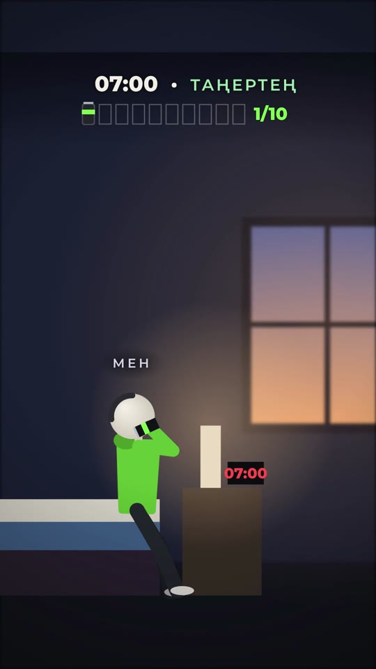
Жатын бөлме, оятқыш жыпылықтайды. Төсек шетінде бірінші банканы ашып ішеді.
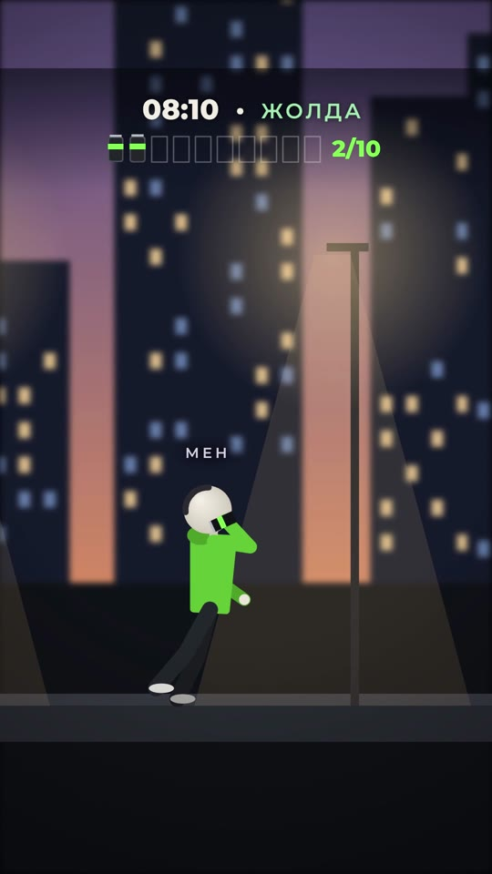
Көшеде жүріп келе жатып ішеді, жанынан көлік зу етіп өтеді.
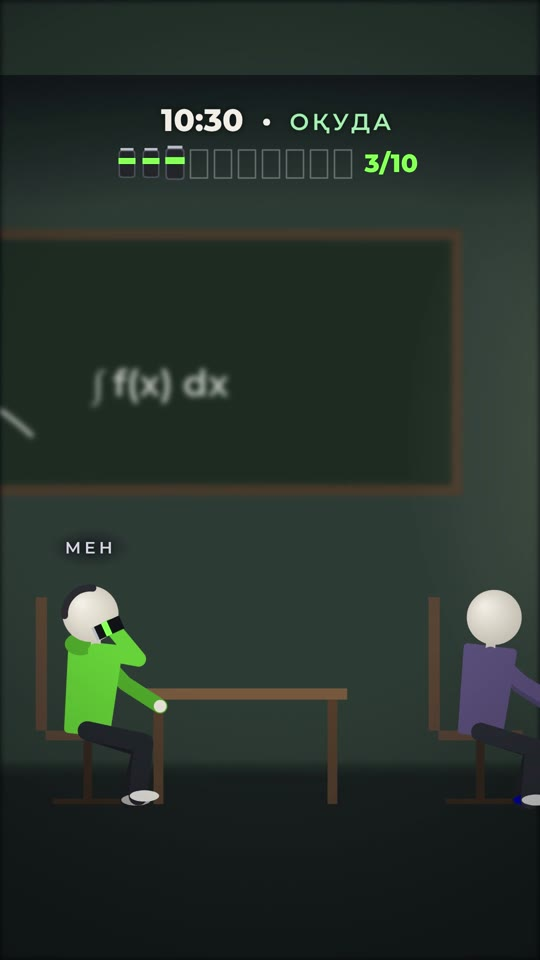
Сыныпта отыр, тізесі тынымсыз дірілдейді.
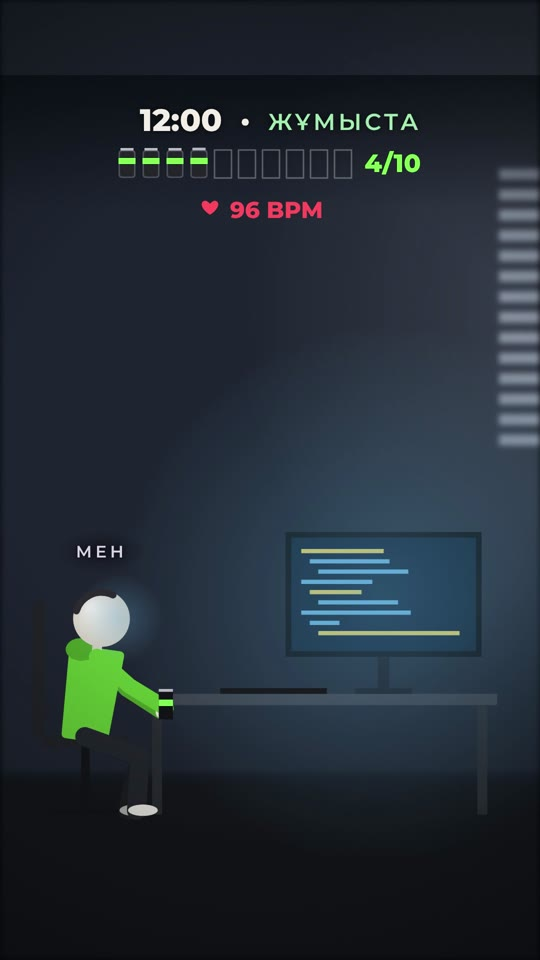
Пернетақтада жылдам жазады, екі банка ішеді. Жүрек 96 BPM.
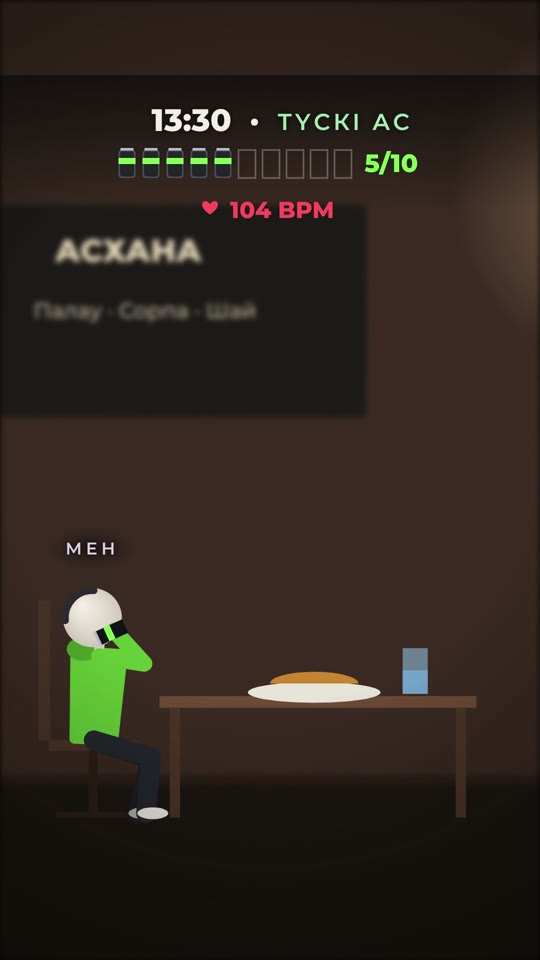
Тамақ пен су тұр, бірақ ол тағы энергетик ішеді.
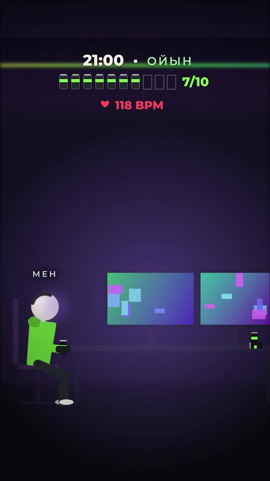
Түрлі түсті жарықты бөлме, ойын. Тағы екі банка.
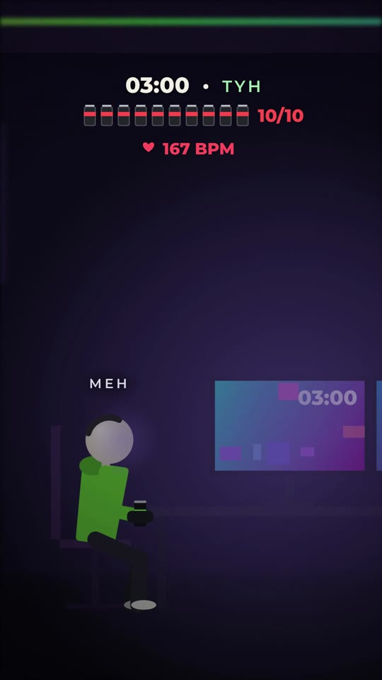
Банкалар қызарады, жүрек 167 BPM, банканы мыжып тастайды.
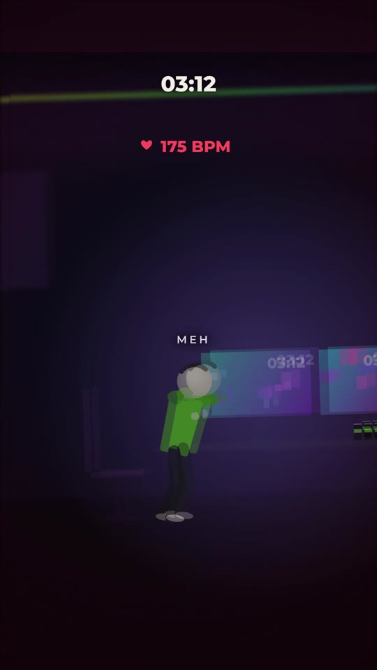
Тұрады, жүрегін ұстайды, көзі екіұдай көреді, экран қызарады — жерге сап етеді.
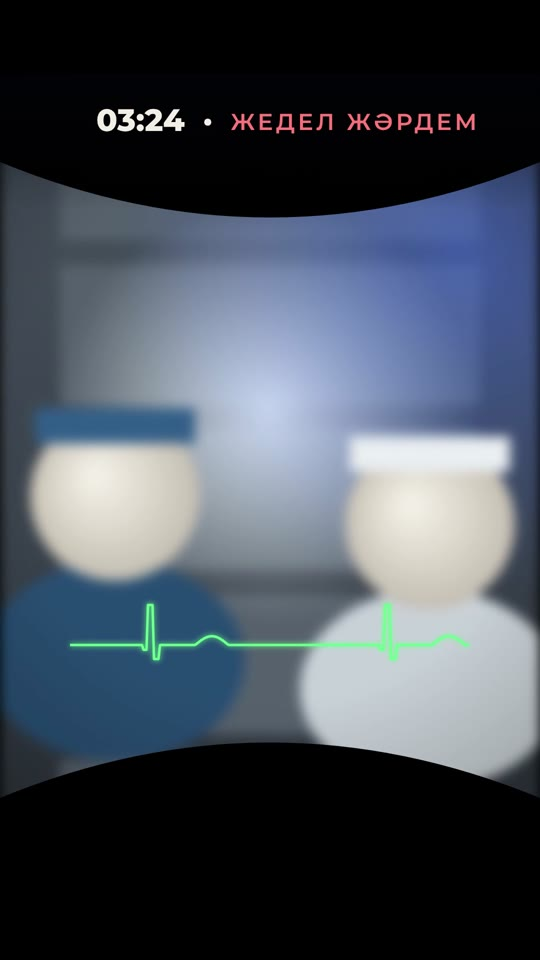
Оның көзімен: көз ашылып-жұмылады, бұлыңғыр дәрігерлер, баяу ЭКГ.
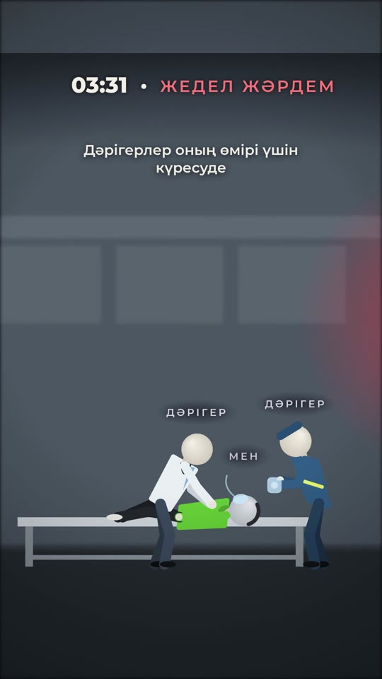
Дәрігер жүрекке массаж жасайды, екіншісі оттегі береді. «Дәрігерлер оның өмірі үшін күресуде».
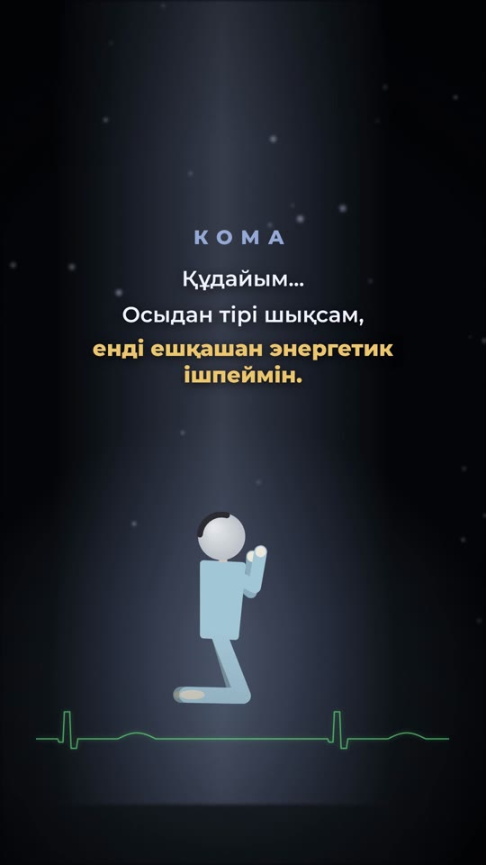
Қараңғыда, жарық астында тізерлеп дұға етеді: «Осыдан тірі шықсам, енді ешқашан энергетик ішпеймін».
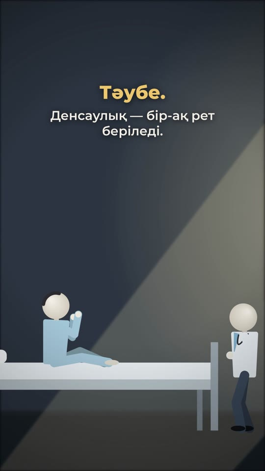
Есін жиып, көтеріледі, қолын жайып тәубе етеді. «Тәубе. Денсаулық — бір-ақ рет беріледі.»